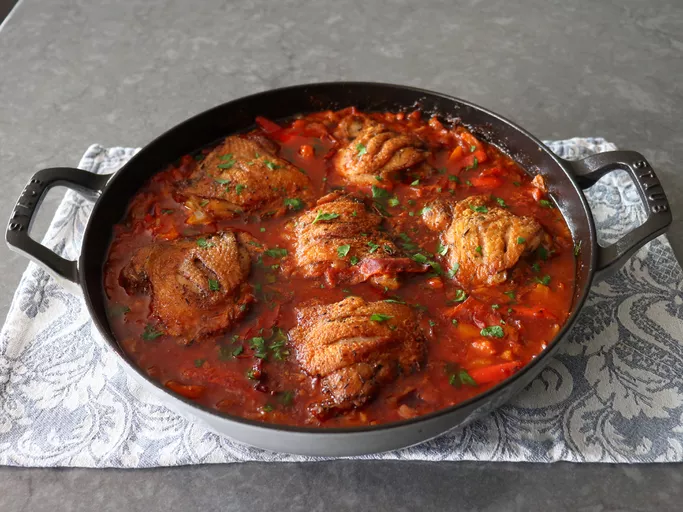

Making chicken curry stew is not as hard as you might think. Here is a step by step guide, with and including
a list of the ingredients required to make the delicious dish.
Ingredients:
Chicken separated into various parts,
4 red bulb onions,
5 ripe red tomatoes,
a handful of spring onions,
a handful of corriander,
half a root of ginger,
3 Cloves of garlic,
assorted seasoning and spices (25gms of each),
salt to taste,
yoghurt, and
butter or olive oil.
Steps to follow:
Prepare the ingredients by blending the tomatoes, cutting the onions into rings, chopping the spring onions and corriander, crushing the garlic and grating the ginger.
Dice up the chicken, put it in a cooking pot and add water to a level covering the diced up chunks and add some salt. Cover the pot and boil until tender. (Keep checking to ensure the chicken does not get burned)
Once the chicken is considered tender, remove the pieces from the cooking pot and drain the chicken stock (if any is left).
In the same pot, add in butter or olive oil and the diced up red onions and spring onions and allow them to saute.
Check the colour and once it turns to golden brown, add in the blended tomatoes, grated ginger and crushed garlic and allow them to cook off the acidity (until you see the oil separating from the broth)
Add in the chicken and the seasoning spices and mix in the bowl to combine. Add some of the chicken stock or some water to prevent the chicken from sticking on to the pot
After 10-15 minutes while turning the meat to ensure proper infusion of the spices, add in some yoghurt to add taste and thicken the stew.
Allow it to simmer under low heat for 5-10 minutes or until the yoghurt has properly infused with the stew.
Switch off the heat and add in the chopped corriander and turn to mix with the curry formed
Proceed to plate the meal and enjoy.
Note:This meal is best enjoyed with a side serving of rice, chapati, fried potatos or ugali.
If you need these meal prepared for you and delivered to you, please contact us through www.keijeimpishi.com